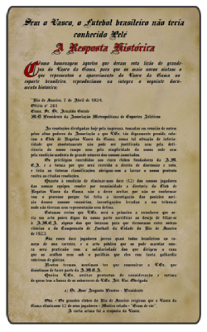

O lugar que o Vasco da Gama ocupa na elite do futebol brasileiro tem a marca gloriosa do time conhecido como os camisas negras que, em 1923, com uma campanha arrasadora (11 vitórias, dois empates e apenas uma derrota), conquistou o primeiro titulo de campeão carioca de sua História. Com o uniforme preto – ainda sem a faixa diagonal – de gola branca e com uma cruz vermelha, semelhante à da Ordem de Cristo, no lado esquerdo do peito, Nélson, Leitão e Mingote; Nicolino, Claudionor e Artur; Paschoal, Torterolli, Arlindo, Cecy e Negrito foram os 11 vascaínos abusados, alguns deles negros e mulatos, que quebraram definitivamente a hegemonia de América, Fluminense, Botafogo e Flamengo, clubes nos quais atuavam somente jogadores brancos. Esses pioneiros deixaram claro, com a conquista do Carioca daquele ano, que o Vasco chegava não apenas para se transformar em um dos gigantes do esporte nacional, mas, sobretudo, para romper preconceitos e ajudar o futebol a ganhar dimensão nacional. Até a ascensão do Vasco havia, no Rio, uma linha divisória que separava os grandes clubes da Zona Sul – Fluminense, Botafogo e Flamengo – das pequenas agremiações que se espalhavam pelos subúrbios da cidade. O máximo que os grandes permitiam à Zona Norte, até aquele momento, era ter o América em seu convívio, como o representante da elite tijucana. As grandes partidas se realizavam no ambiente refinado, de maneirismos ingleses, estádio do Fluminense Football Club, em Laranjeiras, diante de platéias que exibiam chapéus, bengalas e vestidos longos.
Mas, no outro lado da cidade, nos campos suburbanos, o Vasco iniciava sua arrancada. Em apenas seis anos os vascaínos deixaram os degraus inferiores e chegaram à Primeira Divisão da Liga Metropolitana de Desportos Terrestres (LMDT), prontos para disputar e ganhar o campeonato de 1923. A explicação desse rápido sucesso estava nos negros, mulatos e brancos, pobres e bons de bola, que o Vasco havia recrutado nos campos de subúrbio, numa época em que o futebol era oficialmente amador. Para mantê-los no time, comerciantes portugueses os registraram como empregados em seus estabelecimentos. Era a maneira de burlar a exigência do amadorismo, que estava com os dias contados. Registros comprovam que o pagamento a jogadores já era prática corrente em 1915. Junto com as vitórias sobre os pequenos e os representantes da elite (Fluminense, Flamengo, Botafogo e América, vencidos em série) surgiu o apelido de camisas negras, dado pela imprensa àquele time da Zona Norte, que ia adquirindo fama de imbatível. A equipe tinha como técnico o uruguaio Ramón Platero, que chegara ao Rio com a novidade da preparação física. Na campanha irresistível dos camisas negras, o 8 de julho de 1923 viria a se tornar uma data histórica. Nesse dia, o Vasco entrou no campo de Laranjeiras para enfrentar o Flamengo, na terceira rodada do returno. Derrotados anteriormente pelos vascaínos, Fluminense, Botafogo e América uniram suas torcidas à flamenguista. Todos contra um, era a hora da revanche. A partida foi disputadíssima. O Flamengo vencia por 3 a 2, quando nos minutos finais o ponta-direita Paschoal marcou o que seria o gol de empate. Mas o juiz Carlito Rocha, que mais tarde seria presidente do Botafogo, anulou o gol, que para muitos foi legítimo. A derrota não impediu que o Vasco levasse a taça de campeão, com vitória de 3 a 2 sobre o São Cristóvão, depois de estar perdendo por dois gols. Como era de hábito no time comandado por Ramón Platero, a virada aconteceu no segundo tempo. O medo de que os camisas negras repetissem a façanha no ano seguinte levou os grandes clubes a abandonar a Liga Metropolitana, em 1924. Fluminense, Botafogo e Flamengo, com apoio do Bangu e do São Cristóvão, criaram a Associação Metropolitana de Esportes Atléticos (AMEA). Os estatutos da entidade continham cláusulas absurdas, nas quais ficava evidente a falsa nobreza do alegado espírito amador. O impedimento à inscrição de jogadores sem profissão definida e analfabetos tinha como alvo a vitoriosa equipe do Vasco, que reunia negros e pobres. Assim como o veto ao ingresso na AMEA de clubes que não tivessem estádios.
1924 – A resposta histórica
Depois de atropelar os adversários no ano anterior, em 1924 o Vasco já era o inimigo número 1 das demais torcidas cariocas. Um rival a ser batido, de qualquer maneira. E já que era difícil batê-lo em campo, os dirigentes dos clubes rivais resolveram investigar as atividades profissionais e sociais dos camisas negras, uma vez que o futebol ainda era amador e os jogadores não podiam receber salário por praticarem o esporte. Um verdadeiro golpe para tirar o Vasco das disputas.
Na verdade, o que não agradava os adversários era a origem daqueles jogadores: um time formado por negros, mulatos e operários, arrebanhados nas áreas pobres da cidade do Rio de Janeiro.

Depois de esgotadas todas as possibilidades de retirar o Vasco da disputa, por intermédio do regulamento da Liga Metropolitana, os adversários apelaram para a criação de uma nova entidade, a Associação Metropolitana de Esportes Athléticos (AMEA) e recusaram a inscrição dos vascaínos. Segundo os dirigentes adversários, o time cruzmaltino era formado por atletas de profissão duvidosa e o clube não contava com um estádio em boas condições.
Nesse contexto, a AMEA solicitou ao Vasco que excluísse doze de seus jogadores da competição que, não por coincidência, eram todos negros e operários. O Club de Regatas Vasco da Gama recusou a proposta prontamente. E através de uma carta histórica de José Augusto Prestes, então presidente cruzmaltino, o Gigante da Colina mostrou sua total indignação à discriminação racial: “Estamos certos de que Vossa Excelência será o primeiro a reconhecer que seria um ato pouco digno de nossa parte sacrificar, ao desejo de filiar-se à Amea, alguns dos que lutaram para que tivéssemos, entre outras vitórias, a do Campeonato de Futebol da Cidade do Rio de Janeiro de 1923 (…) Nestes termos, sentimos ter de comunicar a Vossa Excelência que desistimos de fazer parte da AMEA”. Vítima do racismo de seus adversários, restou ao Vasco disputar, com outros times de menor expressão, o campeonato da abandonada Liga Metropolitana de Desportos Terrestres.
Nesse dia histórico, o futebol brasileiro começou a ser do povo. Começou a forjar a tolerância, traço fundamental da cultura brasileira, que possibilitou a diversidade e a riqueza racial e cultural que vivenciamos hoje. No ano de 1923 começou a ser possível conhecermos Pelé, Garrincha, Didi, Barbosa, Romário e tantos e tantos outros talentos inigualáveis do nosso esporte. E o Vasco deu o seu mais importante passo para ser o gigante no qual ele se tornou.
O ingresso do Vasco na AMEA foi aprovado em tempo para o campeonato de 1925, com os mesmos direitos que os clubes fundadores. Os “camisas negras” obtiveram a terceira colocação na volta ao convívio com os principais clubes do Rio de Janeiro, em 1925, e conquistaram o vice-campeonato no ano seguinte.